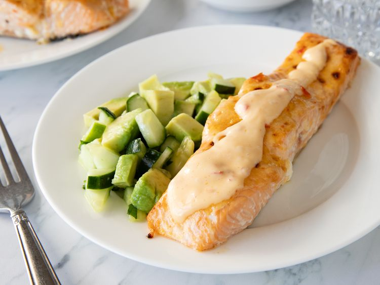

Bang Bang Salmon
Home

Description
This salmon recipe is an easy meal for the new year that's both quick and full of flavor. Coat the fish with a spicy-sweet
sauce and pop it in the oven on a sheet pan while you throw together a fresh salad of cucumber and avocado. Convenience has never tasted so good.
Ingredients
- 2 (8 ounce) salmon filets
- 1/8 teaspoon salt
- 1/4 cup mayonnaise
- 1 tablespoon sweet chili sauce
- teaspoon chile garlic sauce, such as Sriracha®
- 1 small cucumber, chopped
- 1 avocado, chopped
- 1 tablespoon chopped cilantro
- 1 1/2 teaspoons salt
- 1 teaspoon lime juice
Steps
- Gather all ingredients. Preheat the oven to 400 degrees F (200 degrees C). Line a large baking sheet with parchment paper.
- Place salmon filets on the prepared baking sheet and sprinkle with 1/8 teaspoon salt.
- Whisk mayonnaise, sweet chili sauce, and Sriracha (R) together in a small bowl. Spoon half of sauce over filets; reserve remaining sauce for serving.
- Bake salmon in the preheated oven for 8 minutes. Turn broiler on High and broil until fish flakes easily with a fork, about 6 minutes.
- Meanwhile, for salad, combine cucumber, avocado, cilantro, 1 1/2 teaspoons salt, and lime juice in a separate bowl.
- Drizzle reserved sauce over salmon, and serve with cucumber salad.